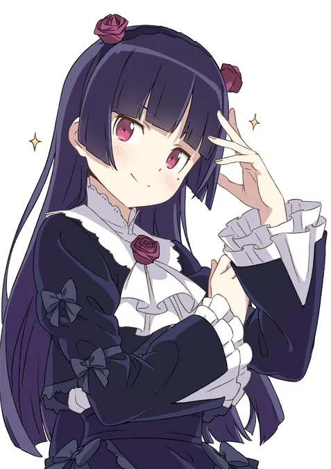

✝️Kuroneko✝️
Ruri Gokou (五更 瑠璃, Gokō Ruri), also known as Kuroneko (黒猫, lit. "black cat"), is one of the main characters of the series. She's an avid anime fan and a Chūnibyō who claims to have supernatural powers, inspired by her favorite anime Maschera: Lament of a Fallen Beast. She's very skilled at several things, but she doesn't automatically success in everything she tries, in contrast to Kirino.